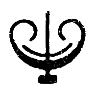

The Bitters Column is a bi-monthly publication about forming a feminist graphic design practice in conversation with others.
The Bitters Column launches every first of the month.
The first launch was on April 1, April Fools’ Day. Bitter drinks and jokes was served at 6 p.m., Bodega De Posthoorn, Den Haag .
The second launch will be on May 1, International Workers Day / Labor Day, at Paradise, Den Haag (time and happening TBA)
The third launch will be on June 1, ‘Just a Summers’ Day’. (location and happening TBA)
The fourth launch will be on July 1, ‘The day before the day…’, opening the graduation show at KABK.
*
Contact: malvaaskerup@gmail.com
This is a research project into editorial practices as means for collaborative work, initiated by graphic designer Malva Askerup, as part of graduation project 2026.
Web design and development: Malva Askerup
